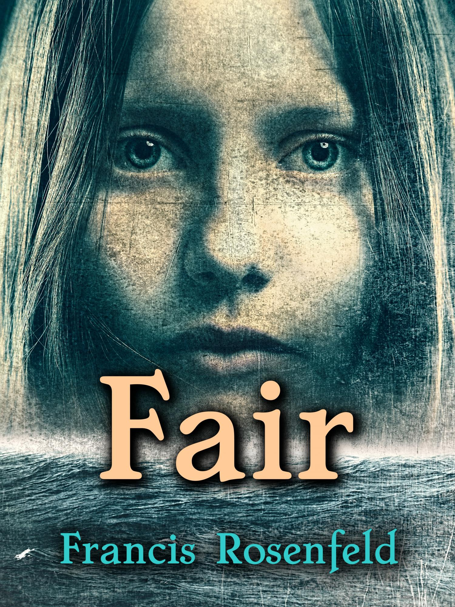
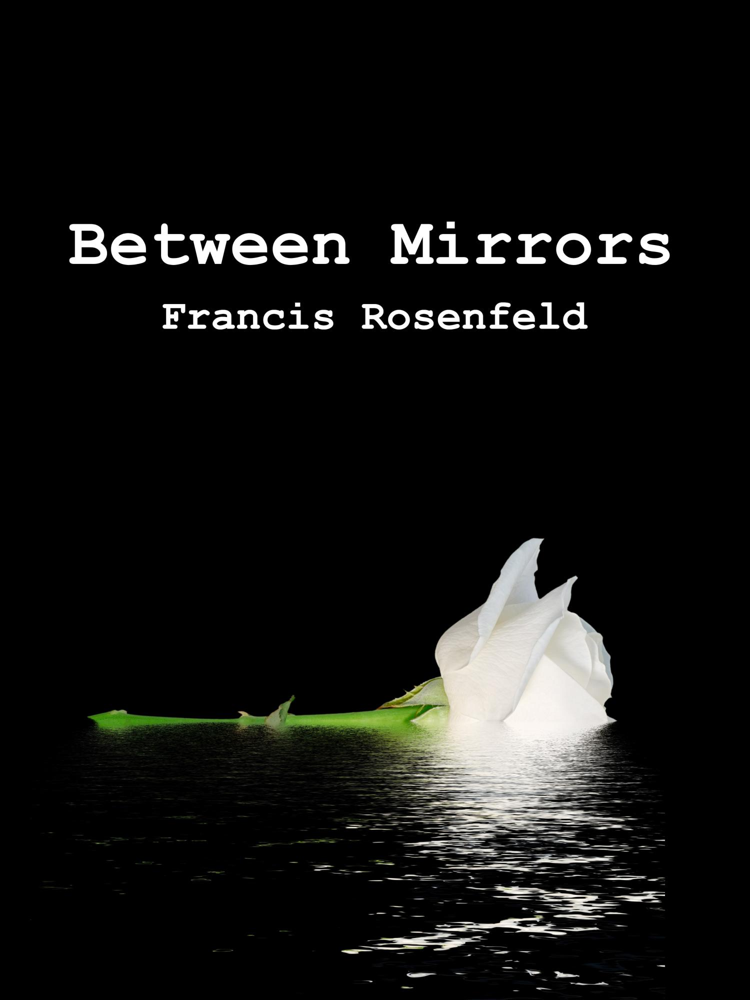
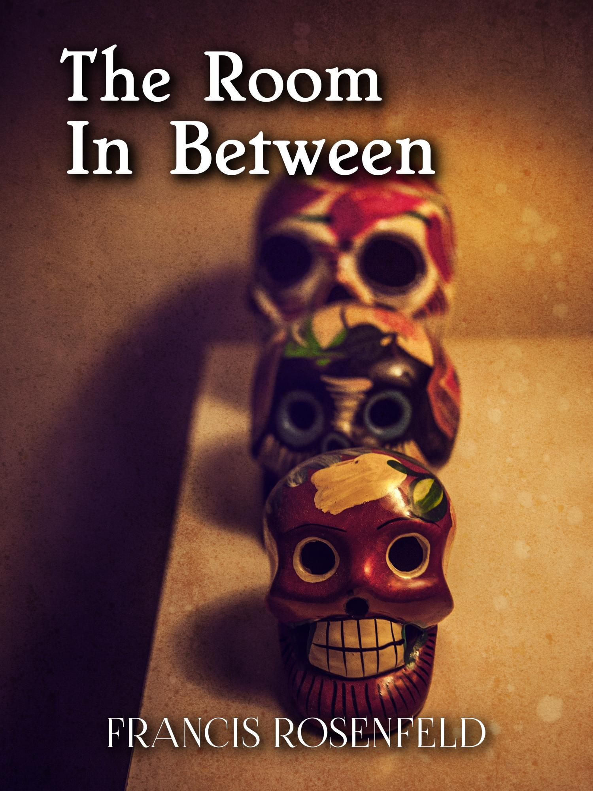
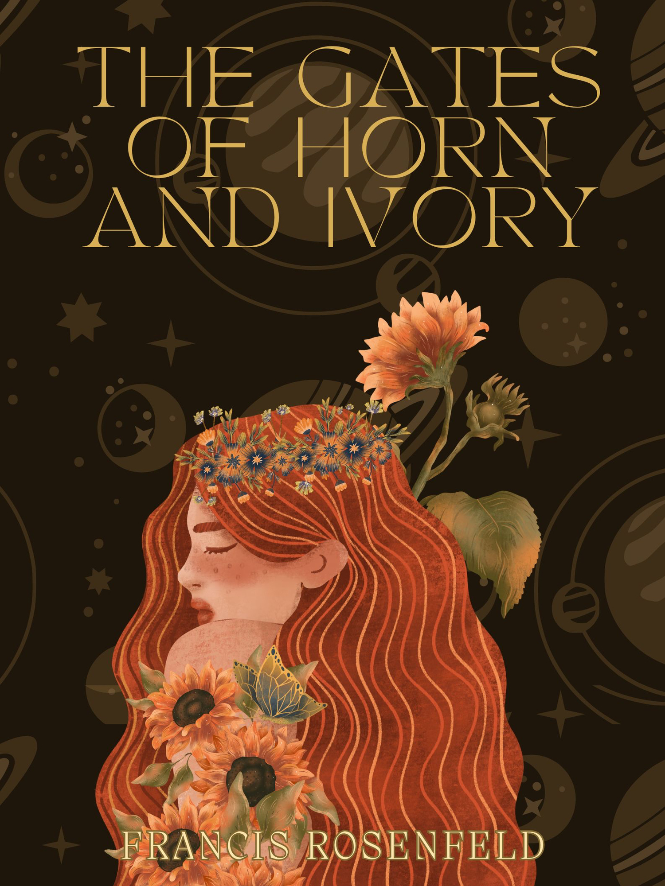
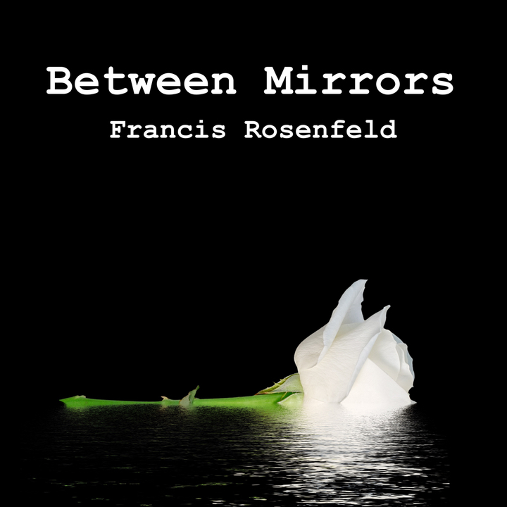
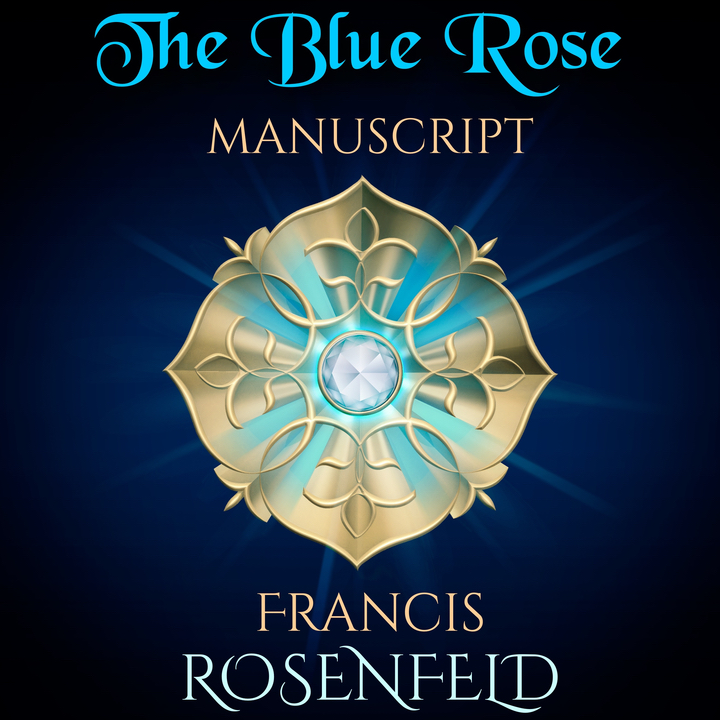
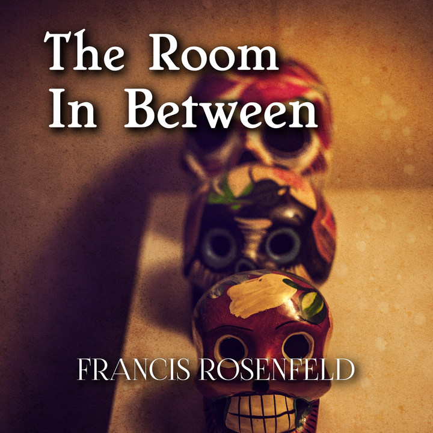

Francis Rosenfeld Books Exploring society, change, and human connection through fiction. Ebooks Audiobooks Podcasts Terra Two Young biologist Sarah Feaherty enrolls in a post-doctoral program run by a reclusive religious order and unwittingly becomes part of their terra-forming team. At the age of 116, Sarah is entrusted to tell the story of their first century twently light years away from home. Generations Between the virtual world, immortality and reshaping matter reality takes a whole new meaning for the plucky descendants of the human race. The children of Terra Two are growing up in a world where dangers are non-existent and almost anything is possible. Letters to Lelia Never forget, my dear child, that life is made of days, and no matter how many days you were gifted with, you should strive to enjoy every single one of them. The Plant - A Steampunk Story A story of man versus plant, plant versus machine, logic versus habit, possible versus real, biology versus mechanics, haphazard versus systematic and all the complexities in between. Fair It is never easy growing up different, but when no one has looked like you in seven generations, social life can become quite difficult to manage.  Door No. 8 Taylor Bradford is thrilled to have been admitted into a prestigious college, but school and life are not always what they seem. The Wayfinding Systems class she can't remember enrolling in, but which she just can't escape, opens her perception to mental processes and realities she didn’t think possible. A Year and A Day A coming of age story about belief, ritual, tradition, perception and wisdom. Mobius' Code What can you say about a girl who was supposed to die tragically young? That her guardian angel got distracted while writing her life code and inadvertently sent her into an infinite loop, a quantum uncertainty of sorts, packed with bonus features. Between Mirrors Once you are made aware that you do not know the first thing about reality life becomes a lot harder, but also a lot brighter, more interesting and more surprising too.  The Blue Rose Manuscript What would you do if after devoting yourself to the study of an ancient manuscript for three whole years you found out you might be the one who actually wrote it? Well, penned it, anyway. No adventure is more spellbinding than the epic journey of the mind. Don't Look Down Collected poetry. A solitary quest for of all the things that give life meaning. The Room In Between A man finds himself in a sedate empty lounge with no memories of his past. Hidden doors disguised by beautiful wall marquetry panels take him on disjointed adventures through alternate versions of his life, none of which he recognizes and where he feels like a imposter pretending to be himself.  The Library When the search for meaning yields too much. Welcome to reality according to everybody. My Dear Fiona An American anthropologist and her creative sister spend a year in the Orkney Islands trying to locate the burial site of a Viking princess from the 10th century and find themselves embarking on an adventure much more meaningful than an archeological quest. The Gates of Horn and Ivory Walking in the footsteps of the goddess: Persephone’s story.  Terra Two Young biologist Sarah Feaherty enrolls in a post-doctoral program run by a reclusive religious order and unwittingly becomes part of their terra-forming team. Letters to Lelia Never forget, my dear child, that life is made of days, and no matter how many days you were gifted with, you should strive to enjoy every single one of them. The Plant - A Steampunk Story A story of man versus plant, plant versus machine, logic versus habit, possible versus real, biology versus mechanics, and all the complexities in between. Fair It is never easy growing up different, but when no one has looked like you in seven generations, social life can become quite difficult to manage. Door No. 8 Taylor Bradford is admitted into a prestigious college, where the Wayfinding Systems class she can't remember enrolling in opens her perception to mental processes and realities she didn’t think possible. Mobius' Code What can you say about a girl who was supposed to die tragically young? That her guardian angel got distracted while writing her life code and inadvertently sent her to a quantum uncertainty packed with bonus features. Between Mirrors Once you are made aware that you do not know the first thing about reality life becomes a lot harder, but also a lot brighter, more interesting and more surprising too.  The Blue Rose Manuscript What would you do if after devoting yourself to the study of an ancient manuscript for three whole years you found out you might be the one who actually wrote it?  The Room In Between A man finds himself in a sedate empty lounge with no memories of his past. Hidden doors disguised by beautiful wall marquetry panels take him through alternate versions of his life.  The Library When the search for meaning yields too much. Welcome to reality according to everybody. My Dear Fiona An American anthropologist and her creative sister spend a year in the Orkney Islands trying to locate the burial site of a Viking princess from the 10th century. The Gates of Horn and Ivory Walking in the footsteps of the goddess: Persephone’s story. STORIES by Francis Rosenfeld A weekly podcast featuring book readings and short stories. POETRY by Francis Rosenfeld Spoken word poetry.